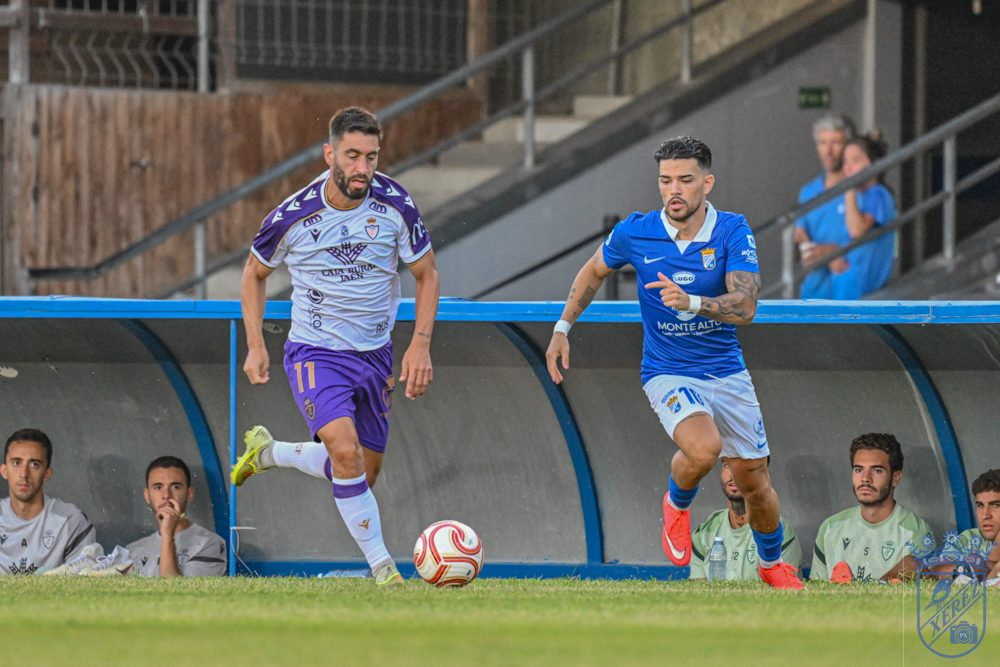

The wrong whistles: pre-season is not the time to demand, it is the time to build

Photo: Diario XerecistaThe whistles heard at Chapín during the friendly against Real Jaén reopen a deeper debate: what can be asked of a team that is still very much in the process of being built.
Yesterday, in the middle of the Feria de la Vendimia Trophy, Chapín brought out something that has lately become all too common: whistling. It came in the middle of the first half, with the team still taking its first serious steps of pre-season, having been presented to its supporters just minutes earlier amid applause and affection. And there lies the contradiction worth pointing out: the same stands that gave the squad an ovation as they came out onto the pitch greeted them with whistles half an hour later, as if the match were already a play-off final and not a warm-up friendly in which the coach is still trying out pieces, systems and players.
It feels as if we have forgotten what stage of the calendar we are at. We are in August, with the league starting in two and a half weeks, with Molist rotating entire line-ups match after match, with signings who still do not know each other and with a starting eleven that, as of today, is not even the one expected to be first choice. This is precisely the time to make mistakes, to experiment, to concede avoidable goals and for a central midfielder not to quite find his place. That is what pre-season is for. Demanding February's competitive level in August is, quite simply, not understanding the process.
And it is no longer just the result or the performance on the pitch. Now everything is criticised: the shirt, the squad number, the coach's haircut, the order of the presentations. Any detail, however small, becomes ammunition for easy complaint, with hardly any leeway or patience for a project that needs time to settle. It is a phenomenon that is certainly not exclusive to Xerez CD, but in Jerez it hurts especially because of what the club's recent history represents.
Because we should not forget where we have come from. Barely three years ago this crest was stuck in the mud, in the regional leagues, dragging along financial, administrative and structural problems that seriously threatened the club's very survival. Those years taught us the hard way what really matters: that there was a team, that there were fans in the stands and that Xerez CD continued to exist. Everything else, including the logical sporting demands of a division like the Segunda Federación, is a luxury we can afford today thanks to that collective effort to hold on when things were truly ugly.
That does not mean there is no place for criticism, nor that the fans should simply applaud whatever happens on the pitch. Supporters have every right to demand, to analyse and to worry when something is not working. But there are ways and there are moments, and a pre-season friendly, with the squad still under construction, is neither the time nor the place to start whistling. That behaviour does not help the team, does not help the coach and, above all, does not match the road this club has travelled to get back to where it is. It is time to stand by the team, grit our teeth if need be, and save the real demands for when the points truly start to be handed out.
🇪🇸 Leer en español ← Back to home